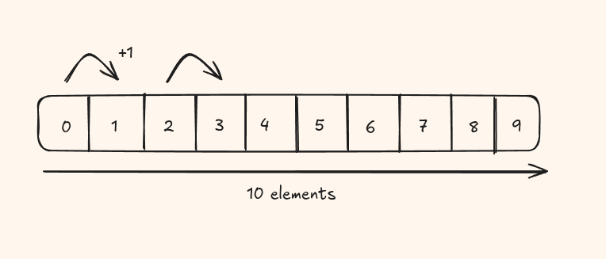
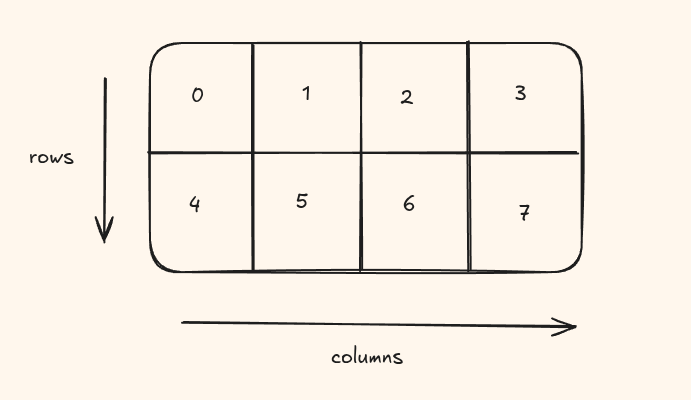
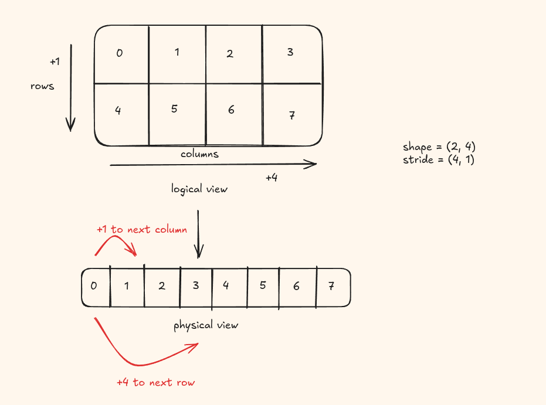
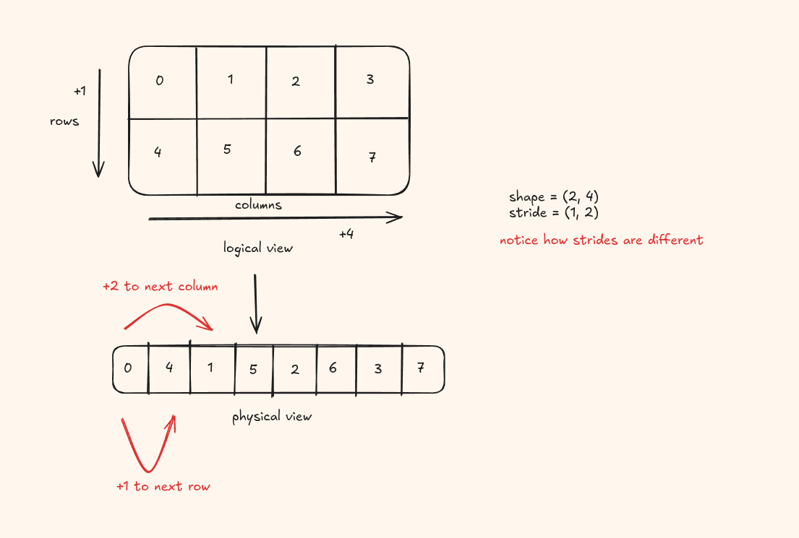
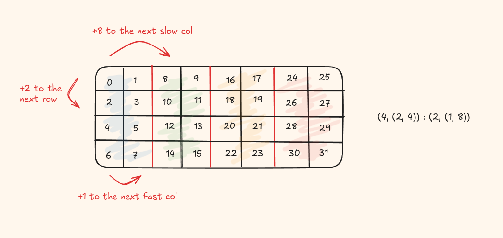

CuTe is a collection of C++ CUDA template abstractions for defining and operating on hierarchically multidimensional layouts of threads and data. CuTe provides Layout and Tensor objects that compactly packages the type, shape, memory space, and layout of data, while performing the complicated indexing for the user.
This blog will walk you through the three main types of layouts that is used in CuTe templates.
What exactly are Layouts?
A layout is a function that maps a logical coordinate to a physical offset in memory. Every layout in CuTe is defined by two things: a shape and a stride.
Given a coordinate c and a stride s, the physical offset is simply c × s. For multiple dimensions, you sum over all dimensions:
That's the whole formula.
1D Layout

The simplest layout is a flat 1D array. We have 10 elements laid out contiguously in memory. To move from one element to the next, we jump by 1. So:
Layout = (shape, stride) = (10, 1)
The shape tells you how many elements exist, and the stride tells you how far apart they are in memory.
2D Layout

For 2D tensors, you need two dimension - one across the row and another across the column. This two dimensional space is the logical representation of the tensor. But remember in the computer, the physical representation is still a single flat array. So how do we make this mapping? Layouts again dummy :)
For a matrix with shape (M, N) and strides (s_row, s_col), the formula is:
offset(row, col) = row × s_row + col × s_col
The question is: what should s_row and s_col be? This is exactly where
row-major and column-major formats come in.
Row major format
In row major order, elements within the same row are contiguous in memory. You fill in row 0
entirely, then row 1, and so on. For an M x N matrix, the strides are:
Layout = (shape, stride) = ((M, N), (N, 1))
2 x 4 matrix is represented as ((2, 4), (4, 1))
Moving across a column (incrementing col) costs 1 hop. Moving down a row (incrementing row) costs N hops, because you must skip over the entire row above.

Column major format
In column major order, elements within the same column are contiguous. You fill in column 0
entirely, then column 1, and so on. For an M x N matrix:
Layout = (shape, stride) = ((M, N), (1, M))
2 x 4 matrix is represented as ((2, 4), (1, 2))
Now moving down a row costs 1 hop (elements in the same column are adjacent), and moving across a column costs M hops.

Nested Layouts
So far, shapes and strides have been flat numbers. Nested layouts allow shapes and strides to themselves be tuples creating a hierarchy of dimensions.
You have a 128xx 128 matrix, and you want to partition it into 32 x 32 tiles for processing by thread blocks. Each tile is itself laid out row major. A nested layout lets you express this tiling directly, instead of computing index arithmetic by hand.
Well, we need an example to understand this more clearly.
Layout (4, (2, 4)) : (2, (1, 8))

What does this even mean?
| Dimension | Shape | Stride | Meaning |
|---|---|---|---|
| row | 4 | 2 | 4 rows, each separated by 2 elements in memory |
| col (fast) | 2 | 1 | 2 contiguous elements within a sub-tile |
| col (slow) | 4 | 8 | 4 sub-tiles, each offset by 8 elements |
The column dimension is itself a nested layout (2, 4) : (1, 8). This means: first
iterate over 2 contiguous elements (stride 1), then step to the next group of 2 by jumping 8
(stride 8), and do this 4 times.
In the next blog, I will walk through the algebra of the layouts, until then, ciao!